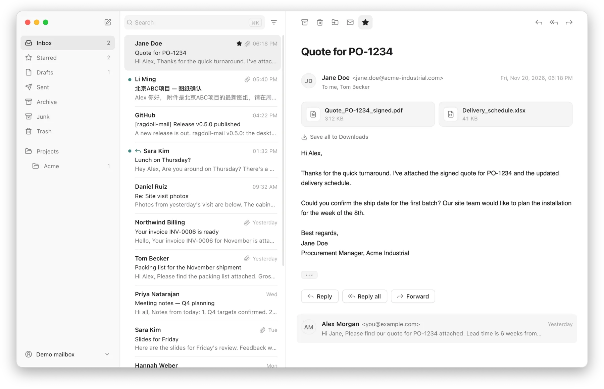
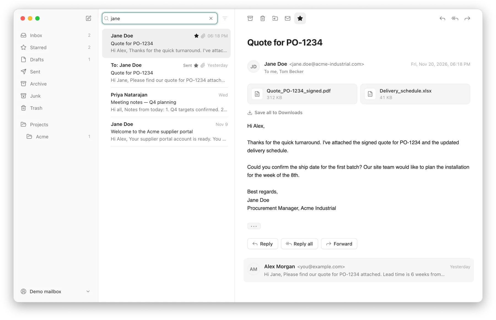
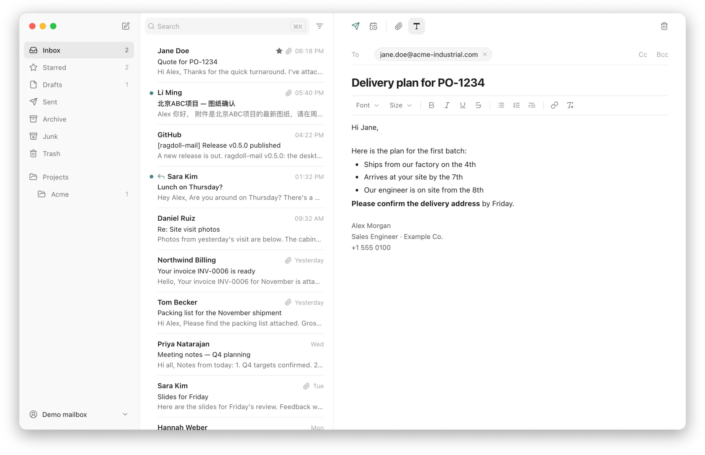

Search that finds your mail.
A mail app for the mailbox you already have. Works with Tencent Exmail, QQ Mail, 163, Gmail, iCloud and any other IMAP mailbox.
Not signed by Apple or Microsoft yet. The first time, choose Open Anyway (Mac: System Settings → Privacy & Security) or Run anyway (Windows: More info).

Your mailbox's search gives back everything. Ours gives back the mail.
We typed the same words into both. On a real Tencent Exmail mailbox with 6,442 mails, its own search returned 4,988 mails every time, even for a word we made up.
Mailbox website search
Ragdoll Mail
Quiet, quick, and hard to get wrong.
Every word, every mail, in a blink
Subject, people, file names and the full text. Chinese, Japanese and Korean too. It works with no internet.

Your mail stays with you
The app talks only to your own mail server. No cloud in between, no account with us. The password stays in Keychain or Credential Manager.
Hard to send a mistake
Up to 30 seconds to take a mail back. It stops you when you wrote “attached” and attached nothing, or left [Name] in the text.
Write the way you like
Fonts, lists, links and your signature. A reply keeps the earlier mails and their pictures. Send now, tonight, or Monday at nine.

Chinese mail that reads right
Names and file names from older Chinese mail systems show as they should, not as broken characters.
A key for everything
C writes a mail, R replies, E archives. Press ? to see them all.
Nothing changes in your mailbox
The same folders and mail as the website. Your phone keeps working as before.
Your assistant drafts. You send.
Claude Code, Codex or any assistant that runs commands can search your mail and write replies with the ragdoll command. Each draft opens in the app, and nothing goes out until you press Send.
Get the command in the app: Settings → Command line → Install. Read the command-line guide →
The mailbox you already have.
Good to know.
Is there a Mac or Windows app for Tencent Exmail (腾讯企业邮箱) with search that works?
Yes, this one. On a real Exmail mailbox with 6,442 mails, the mailbox's own search gave back 4,988 mails for every word we typed, even for a made-up word. Ragdoll Mail gave back only the mails with that word, in less than a tenth of a second.
Is my mail safe?
Your mail is stored on your computer and on your own mail server, nowhere else. The app sends nothing to us. We have no server.
Where is my password kept?
In the password store of your system: Keychain on Mac, Credential Manager on Windows. It is never written into a file.
Which password do I use?
Many mailboxes want a special password for mail apps. Tencent Exmail calls it 客户端专用密码, QQ Mail and 163 call it 授权码, and Gmail, iCloud and Fastmail call it an app password. You make it in your mailbox's settings on the website.
Does it work with no internet?
Reading and searching the mail you already have: yes. Sending and getting new mail need the internet.
Is it really free?
Yes. No ads, no subscription, no account. The code is open source under the MIT license, so anyone can check what it does.
Try it on your own mailbox.
Free. No account. No ads.